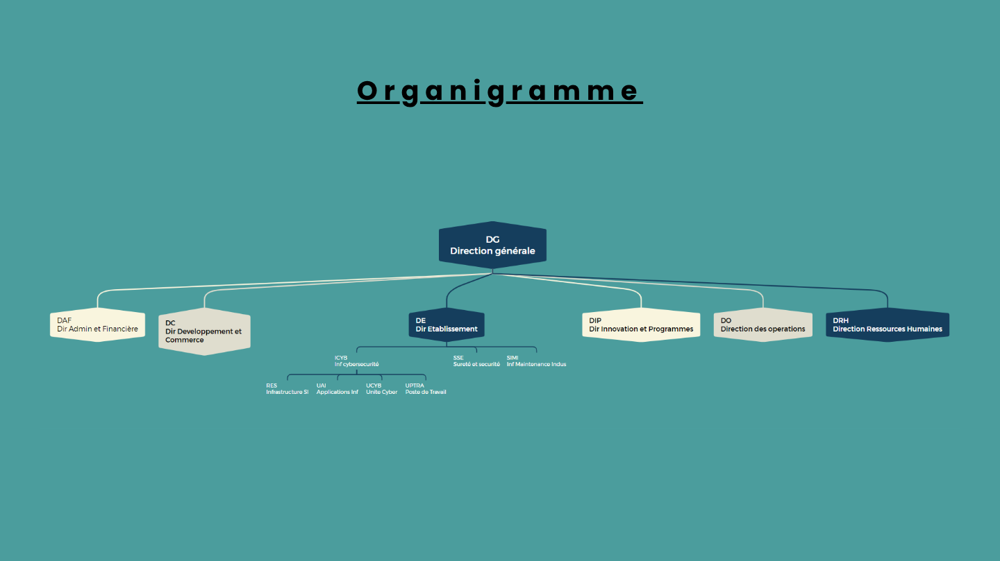

Remplacement d'un parc informatique
Participation au renouvellement complet du parc, dans le cadre d'un projet d'amélioration du matériel destiné à l'ensemble des collaborateurs d'une entreprise de plus de 400 postes.
// BTS SIO SISR · 2025–2026
Futur administrateur réseau et système, en alternance chez Sodern (ArianeGroup) et étudiant à l'UTEC de Melun.
$ whoami Iliès Chelagha — apprenti technicien informatique $ cat formation.txt BTS SIO option SISR · UTEC Melun $ systemctl status alternance ● active — Sodern, Limeil-Brévannes $ ping objectif → administrateur réseau et système
Je m'appelle Iliès Chelagha et je prépare un BTS SIO option SISR (solutions d'infrastructure, systèmes et réseaux) à l'UTEC de Melun, en alternance.
Apprenti technicien informatique chez Sodern à Limeil-Brévannes, je participe à des projets concrets sur le parc informatique : renouvellement du matériel, déploiement de Windows 11 et mise en conformité avec la norme ISO 27001.
Mon objectif : devenir administrateur réseau et système.
Le BTS SIO SISR est axé sur la gestion et la sécurité des réseaux informatiques. Il forme à des métiers comme technicien d'infrastructure ou administrateur systèmes, à la différence du BTS SIO SLAM, orienté programmation.
Établissement de la Chambre de Commerce et d'Industrie, basé en Seine-et-Marne (77).
Apprenti technicien informatique chez Sodern, filiale d'ArianeGroup, à Limeil-Brévannes (94450).
Créée en 1962, Sodern conçoit des équipements de pointe pour le spatial et la défense. sodern.com ↗

Participation au renouvellement complet du parc, dans le cadre d'un projet d'amélioration du matériel destiné à l'ensemble des collaborateurs d'une entreprise de plus de 400 postes.
Conception d'une image personnalisée de Windows 11, puis déploiement sur le parc pour migrer les postes de Windows 10 vers Windows 11.
Suite aux nouvelles réformes de l'ISO 27001, remise en conformité des pratiques de l'entreprise.
Avec 22 semaines de stage dans différentes entreprises informatiques.
En alternance chez Sodern (ArianeGroup), Limeil-Brévannes.
Continuer à me spécialiser dans l'infrastructure et la sécurité des systèmes.
Cybersécurité et administration systèmes et réseaux. Je suis mes sources sur Feedly ; les derniers articles sont ajoutés ici automatiquement chaque lundi.
Chargement de la veille…
Sources : CERT-FR, Le Monde Informatique, ZATAZ, IT-Connect, LeMagIT · importer ces sources dans Feedly
Écrivez-moi, je réponds rapidement.